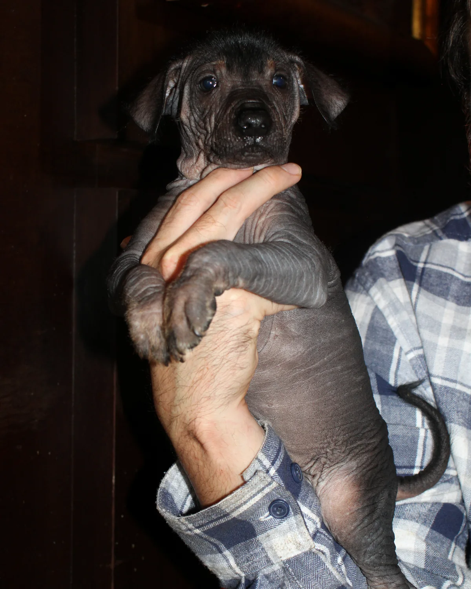

Trivia Xoloitzcuintle · Crónica informativa
Tlilxóchitl Ramírez protagoniza una trivia sobre pelo, genética, tallas y orejas del xoloitzcuintle
La nueva emisión de Trivia Xoloitzcuintle convirtió preguntas frecuentes sobre la raza en una conversación práctica, con Tlilxóchitl Ramírez como invitada y referencia visual. A lo largo de poco más de diez minutos, Fernando Ramírez recorrió temas que suelen aparecer una y otra vez entre quienes empiezan a conocer al xoloitzcuintle: el pelo en la variedad sin pelo, el origen genético de esa característica, la pigmentación, las tallas y el desarrollo de las orejas.
Una invitada de talla intermedia
Al comienzo del programa, Fernando presentó a Tlilxóchitl como una cachorra xoloitzcuintle de talla intermedia. La emisión también explicó que en Xolos Ramírez es habitual recurrir a nombres de raíz náhuatl y presentó el nombre de Tlilxóchitl con el sentido de “flor negra”. Su presencia permitió que varias respuestas no quedaran solamente en la explicación verbal: el cuerpo, la piel, el copete y las orejas de la cachorra aparecieron directamente en cámara mientras se desarrollaban los temas.
¿Un xoloitzcuintle sin pelo puede tener pelo?
Una de las primeras preguntas abordó una duda muy común: si un xoloitzcuintle de la variedad sin pelo puede presentar vello. En el programa se explicó que sí puede aparecer pelo en zonas concretas, como la cabeza, las patas y la cola, sin que eso cambie la clasificación del ejemplar como variedad sin pelo.
En Tlilxóchitl el ejemplo resulta particularmente visible por su copete oscuro, un rasgo que ya forma parte de su identidad visual en las fotografías y registros recientes del criadero.
Genética, antigüedad y pigmentación
La conversación pasó después a la característica genética asociada a la ausencia de pelo. Fernando la describió como una mutación de larga antigüedad y distinguió entre referencias respaldadas por restos arqueológicos y estimaciones más amplias sobre el tiempo que la raza lleva acompañando a las sociedades mesoamericanas.
Otro bloque se centró en el color de la piel. El programa explicó que, durante el crecimiento, la pigmentación puede verse más definida y que la melanina influye en el oscurecimiento de la piel con la exposición solar. La idea se presentó como una forma de entender por qué algunos cachorros cambian perceptiblemente de tono conforme avanzan en su desarrollo.
Tres tallas y una medida clave: la cruz
La tercera gran línea de la emisión fue la clasificación por talla. Se repasaron las tres categorías usadas para el xoloitzcuintle —miniatura, intermedia y estándar— y se explicó que la altura se toma a la cruz, desde el suelo hasta la zona donde se encuentran cuello y hombros.
Tlilxóchitl sirvió como referencia del rango intermedio. Más que memorizar una cifra aislada, la explicación puso el énfasis en entender cómo se mide correctamente un ejemplar y por qué la talla se refiere a su desarrollo adulto.
Las orejas también comunican
El último bloque informativo estuvo dedicado a las orejas. Fernando explicó que el levantamiento ocurre como parte del desarrollo natural y que puede avanzar a ritmos distintos entre ejemplares. También señaló que el movimiento de las orejas forma parte de la comunicación corporal del xoloitzcuintle: pueden orientarse hacia delante, atrás o los costados según la atención y el estado del perro.
Durante la emisión se describió además una práctica de soporte temporal que algunas personas utilizan durante el desarrollo. El tema se presentó como una experiencia de manejo dentro del criadero, no como sustituto de una evaluación veterinaria individual.
Una trivia diseñada para convertirse en conversación
El formato de Trivia Xoloitzcuintle busca responder preguntas concretas sin perder el contacto directo con los perros. En esta emisión, cada tema podía funcionar por sí mismo como una cápsula informativa, pero el conjunto construyó un retrato más amplio de la raza a partir de una cachorra real y de preguntas que suelen repetirse entre familias interesadas.
- ¿Puede tener pelo un xoloitzcuintle de la variedad sin pelo?
- ¿Por qué existe la variedad sin pelo?
- ¿Por qué cambia la pigmentación durante el crecimiento?
- ¿Cuántas tallas existen y cómo se mide la altura a la cruz?
- ¿Las orejas se levantan de forma natural y qué expresan con su movimiento?
Tlilxóchitl como registro vivo de su etapa de cachorro
Además de responder dudas generales sobre la raza, el episodio deja un registro concreto de Tlilxóchitl en septiembre de 2026: su talla todavía en desarrollo, su piel oscura, el copete, las orejas aún en proceso y un temperamento que durante el cierre fue descrito como tranquilo, cariñoso y sociable. Es justamente ese tipo de registro el que permite que los programas de Xolos Ramírez funcionen también como archivo de crecimiento de cada ejemplar.
La fotografía principal de esta crónica fue tomada por Alexandra Ramírez durante la misma sesión y conserva ese momento: Tlilxóchitl todavía cachorra, sostenida frente a cámara, mientras una emisión educativa se construía alrededor de sus propios rasgos.
Ver el programa completo en YouTube →
Conocer el perfil de Tlilxóchitl Ramírez →
← Volver al blog de Xolos Ramírez